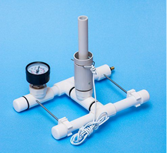
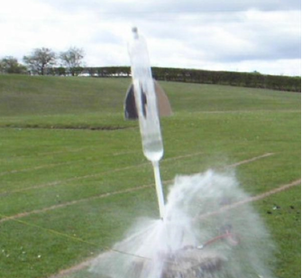
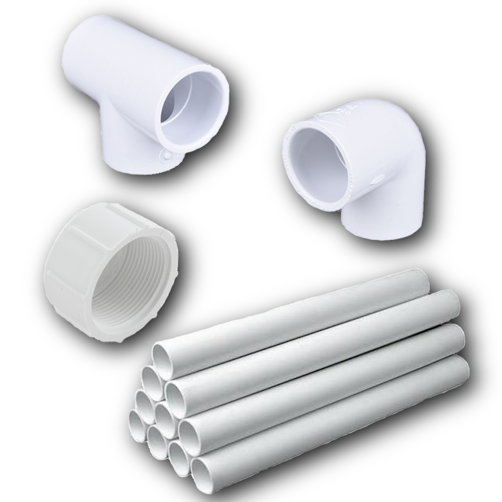
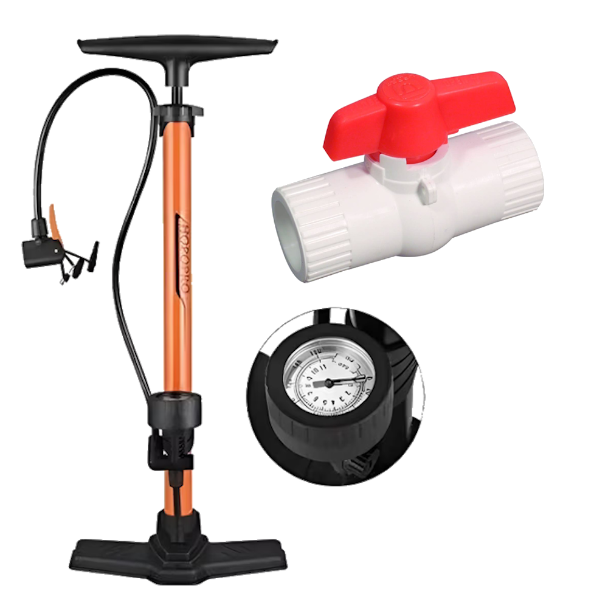
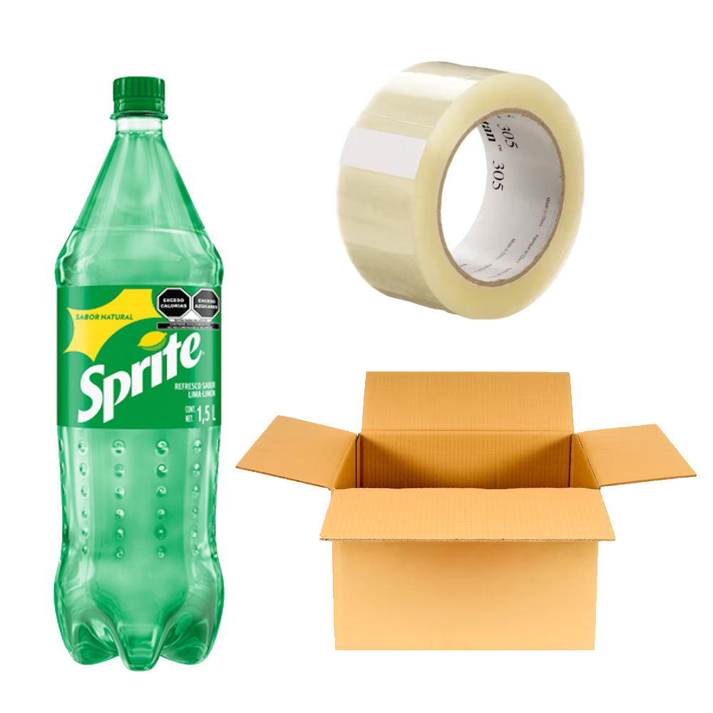
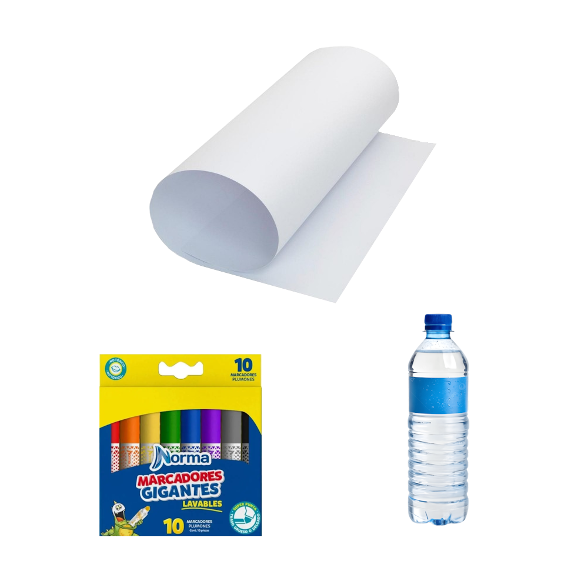
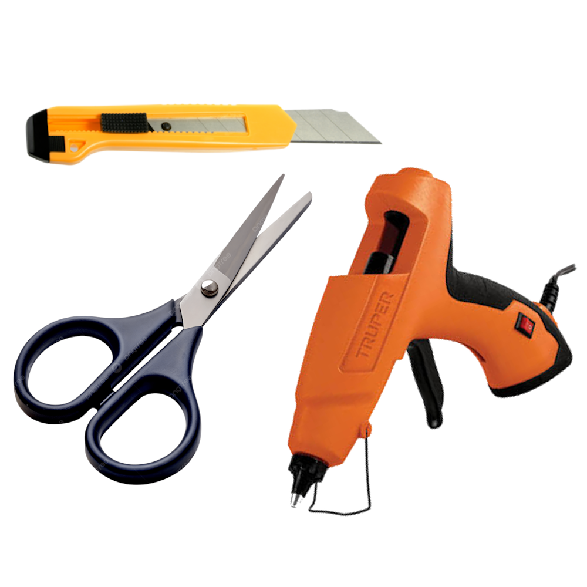
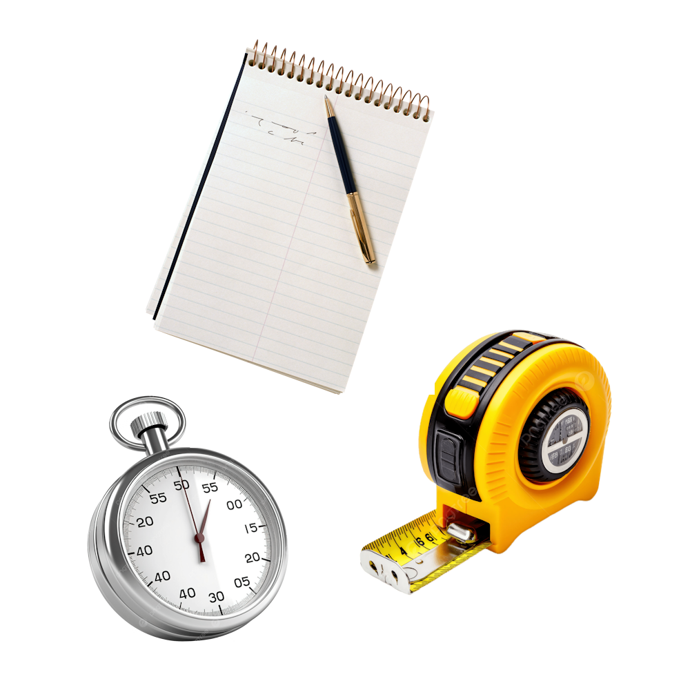

Taller trimestral · 10 sesiones de 40 min
Un programa práctico de introducción a la ingeniería para estudiantes de secundaria. Sin fórmulas que intimiden, con manos en la masa desde la primera sesión hasta el lanzamiento final.
Cierre del trimestre
Todo lo que se aprende en las diez sesiones converge en un solo proyecto que el grupo construye desde cero.
Estructura autoportante fabricada en tubería y conexiones de PVC, diseñada y ensamblada por los propios estudiantes. Incluye soporte ajustable para fijar el ángulo de disparo y un sistema de liberación por cuerda.

Fabricado con botellas de refresco de gran volumen, combina agua como masa de reacción y aire comprimido como fuente de energía. Se presuriza con una bomba de bicicleta convencional.

Logística
La escuela reúne el material general antes de iniciar el trimestre; cada sesión utiliza además insumos puntuales que se detallan a continuación.
Estructura
Tubería PVC 1/2", codos, tes y tapones

Propulsión
Bomba de bicicleta con manómetro, válvula de liberación

Cohetes
Botellas de soda 2–3 L, cartón, cinta de embalaje

Consumibles
Marcadores, cartulinas, agua

Taller
Pistolas de silicón caliente, cúter, tijeras

Ensayo
Espagueti crudo, malvaviscos, jeringas, popotes
Registro
Cronómetro, cinta métrica, cuaderno

Costo Total Aproximado (Cohete y Base)
$400 - $600
Programa
Cada sesión abre con una presentación breve y dedica la mayor parte del tiempo a construir o probar algo con las manos.
Reto introductorio en equipos: construir la torre autoportante más alta con espagueti y malvaviscos. Primer acercamiento a estructuras, triangulación y trabajo en equipo bajo límite de tiempo.
Ver presentaciónLas leyes de Newton explicadas con carritos, rampas y empujones, sin ecuaciones en el pizarrón. Los estudiantes predicen y luego comprueban qué pasa al cambiar peso, fricción e inclinación.
Ver presentaciónQué es el aire comprimido y cómo empuja: experimentos con jeringas y globos para sentir la presión antes de nombrarla. Primer contacto con la idea que hará volar el cohete final.
Ver presentaciónPor qué algunas formas se mueven mejor en el aire. Se doblan y comparan siluetas de papel frente a un ventilador para observar de forma directa la resistencia del aire.
Ver presentaciónCada equipo bocetea su propio cohete: número de botellas, forma del cono y ubicación de las aletas, aplicando lo visto en las sesiones anteriores. Además, se realiza la base de PVC.
Ver presentaciónIntegración de la sección del tubo de lanzamiento y prueba de la conexión donde embonará la botella de soda. Simular la colocación de un cohete vacío en la base y revisar que la estructura no se tambalee.
Ver presentaciónManos a la obra: ensamblaje de botellas, cono de nariz y aletas siguiendo el boceto de la sesión anterior. Cada equipo termina la sesión con el cuerpo de su cohete listo.
Ver presentaciónConstrucción grupal de la punta cónica: Los estudiantes arman la punta cónica, añaden un ligero lastre si es necesario y la aseguran a la parte superior de la botella principal.
Ver presentaciónLanzamientos de práctica a baja presión para calibrar cantidad de agua, presión de aire y ajustes de aletas. Se registran resultados en una bitácora para comparar variables.
Lanzamiento final de cada cohete a máxima presión frente al grupo, medición de distancia y altura estimada, y cierre del trimestre con la premiación del vuelo más exitoso.
Evidencia en vuelo
Aquí se exhiben videos de lanzamiento de los proyectos pasados
Lanzamiento final con compresor de aire
Prueba de lanzamiento con bomba de aire
Prueba de lanzamiento con compresor de aire
Asistente del taller
Pregúntame sobre sesiones, materiales o el lanzamiento